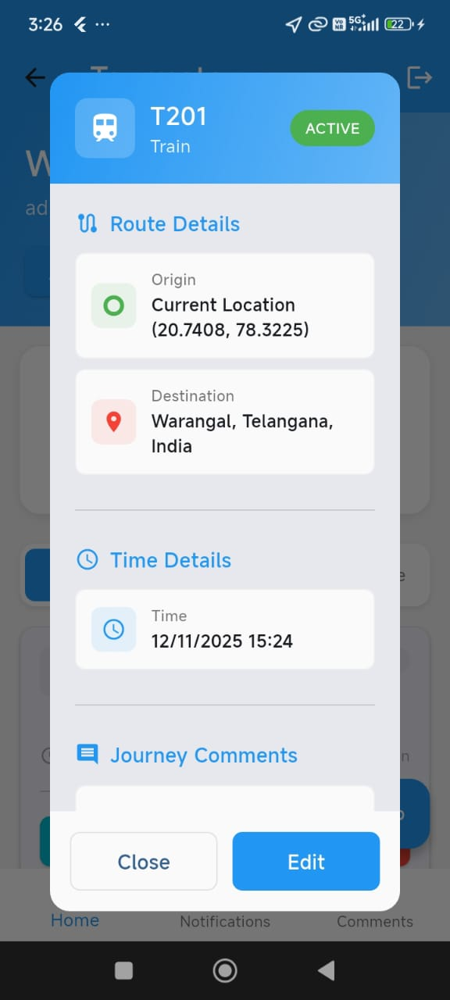
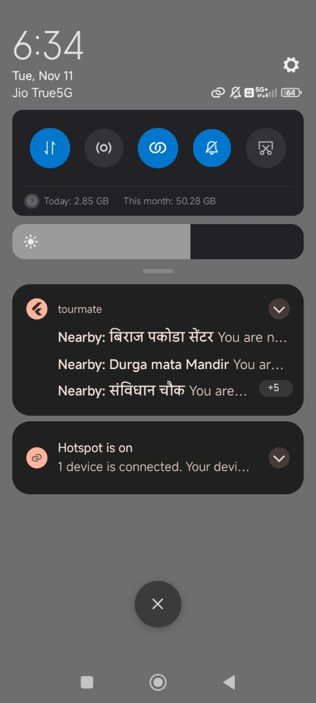
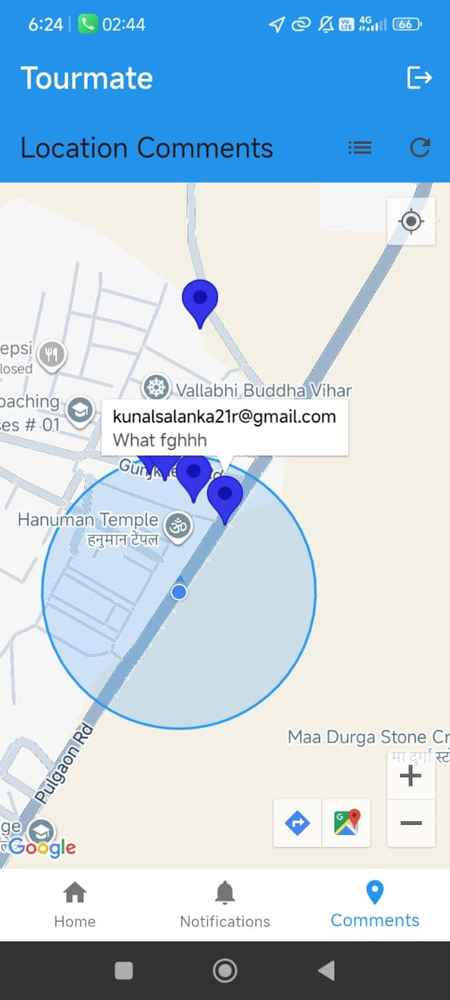
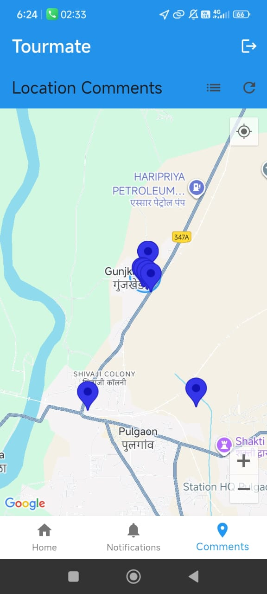
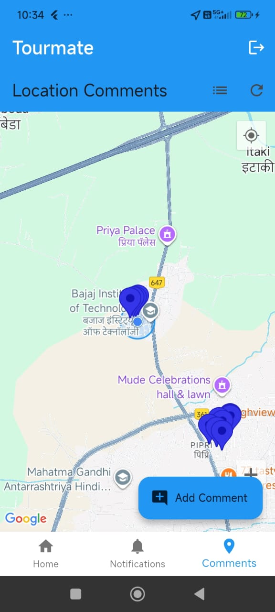
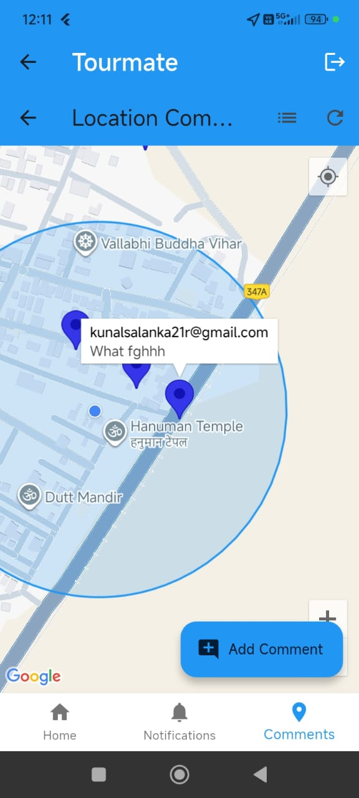
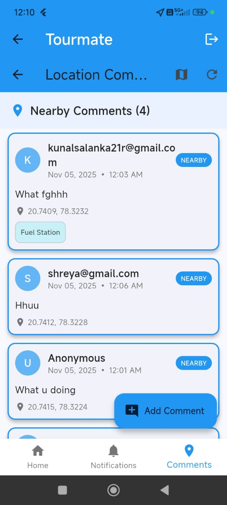
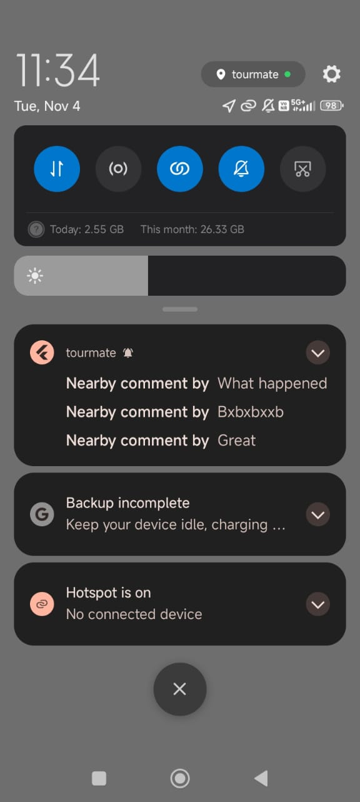

NATPAC Trip Tracking & Analytics
Secure mobile trip logging, GPS tracking, notifications, and an admin analytics dashboard for transportation research
Project Overview
A secure, role-based system for automated trip data collection. Mobile users can record and track trips with maps and notifications, while NATPAC scientists/admins use a web dashboard for analytics, filtering, and reporting.
Key User Features
- Secure registration & login using Firebase Authentication
- Role-based access (mobile users vs NATPAC scientist/admin console)
- Trip creation with origin/destination via GPS or manual map entry
- Transport mode selection (walk, car, bus, train, flight, etc.)
- Trip metadata: time/date, purpose/activity, and accompanying travellers
- Smart nudges to complete missing fields before submitting
- Real-time trip status: Active, Upcoming, Completed
- Checkpoint tracking during active trips + route reconstruction on map
- Location-based comments + map pins for community insights
- Push notifications (FCM) for recommendations and region-specific alerts
- Trip planner AI chatbot for conversational assistance and local suggestions
Admin / NATPAC Scientist Dashboard
- Live analytics: total trips, users, mode share, daily trips, top OD pairs
- Advanced search & filters by mode, status, time range, origin/destination
- Status badges for quick identification (ACTIVE / PAST / FUTURE)
- User monitoring, trip review, and comment auditing
Data & Security
- Firestore collections for Users, Trips, Checkpoints, and Comments
- Role-based access control (RBAC) for admin/scientist privileges
- Secure credential handling via Firebase Auth (hashed passwords)
Integrations & Deployment
- Google Maps API for geocoding, route visualization, and OD mapping
- Firebase Cloud Messaging for real-time push notifications
Project Screenshots







